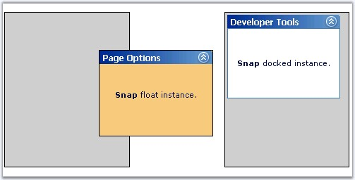

CSS styles can be set to the snap control just by setting the style class name to the CssClass property. This applies the various style definitions to the Snap control.
|
Property |
Description |
|
CssClass |
Specifies the class name of the css styles to be applied for the control. |
|
UndockedCssClass |
Specifies the class name of the css styles to be applied for the snap element when it is not docked. |
The UndockedCssClass allows to define styles for snap elements that are in floating state without being docked inside the containers.

Figure 384: Snap elements with Css styles
1. Define the css styles that should be applied to the control. Here, border is applied for the snap elements and background is changed for the floating element.
|
[StyleSheet]
.Undock { background-color:#f2ce89; border: solid 1px black; } .Complete { border: solid 1px black; } |
2. Include the following link, and set the style sheet name to the href attribute, inside the head tags to link the style sheet to the application.
|
<link href="css/SnapStyle.css" type="text/css" rel="stylesheet"> |
3. Assign the class name of the css styles to the corresponding properties which should be applied to the control. Here, by assigning the UndockedCssClass to the Undock css class, the background color is changed when the snap element is floated. Using the CssClass, borders are applied to all the snap elements.
|
[aspx]
<cc1:snap id="Snap1" runat="server" Width="160" DockingContainers="LeftColumn,RightColumn" MustBeDocked="False" IsCollapsed="false" UndockedCssClass="Undock" CssClass="Complete"> <%--Template definitions--%> </cc1:snap>
<cc1:Snap ID="Snap2" runat="server" Width="160" MustBeDocked="True" DockingContainers="LeftColumn,RightColumn" IsCollapsed="false" UndockedCssClass="Undock" CssClass="Complete"> <%--Template definitions--%> </cc1:snap> |